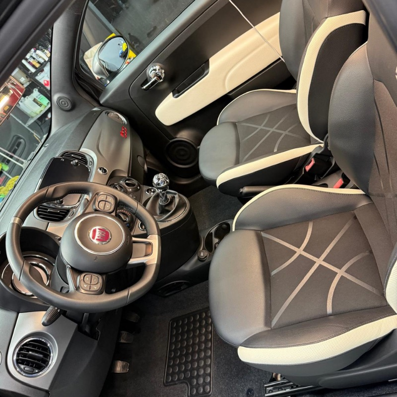
InteriorLimpeza de estofos e tapetes
Remove manchas, odores e sujidade acumulada em bancos, tapetes e alcatifas.
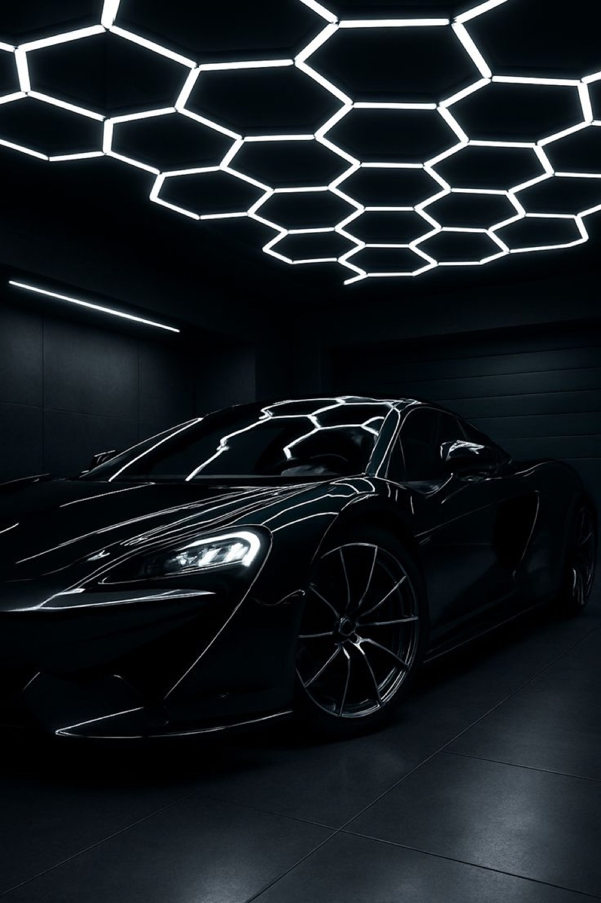
Detalhamento automóvel · Sintra
Limpeza de interior, lavagem completa e polimento da pintura. Entrega o carro, recebe-o a brilhar.
Serviços
Interior, exterior, pintura e vidros. Diga-nos o estado do carro e propomos o tratamento certo.

InteriorRemove manchas, odores e sujidade acumulada em bancos, tapetes e alcatifas.
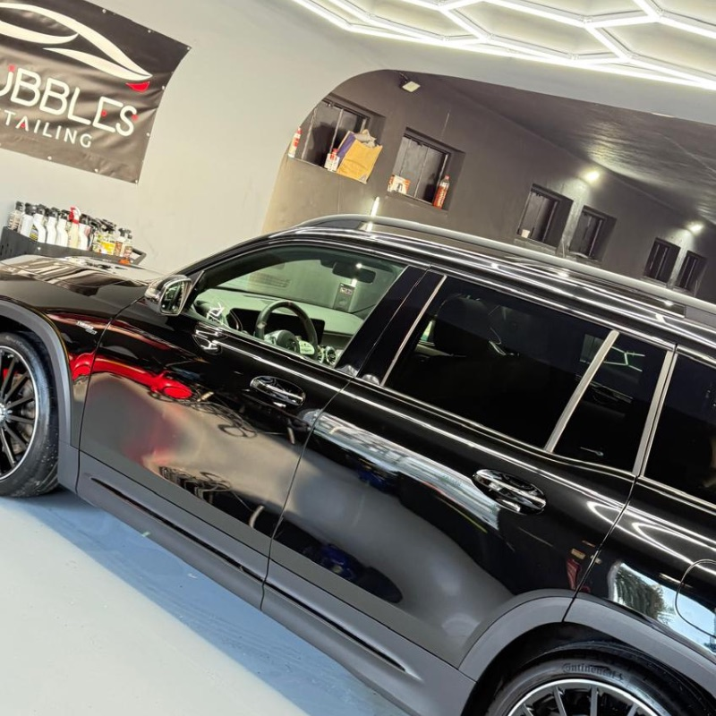
Interior e exteriorLavagem cuidada por dentro e por fora, para entregar o carro limpo em cada canto.
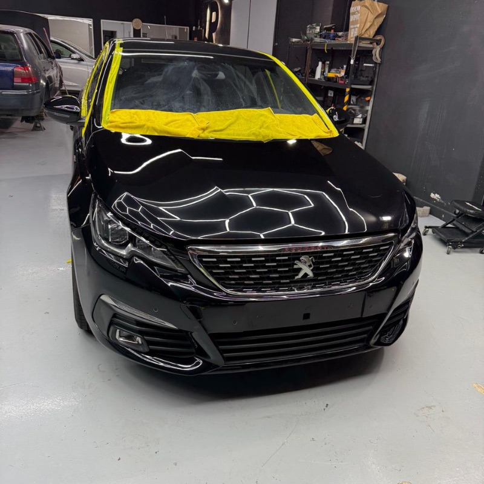
PinturaCorrige riscos, marcas e falta de brilho. A pintura volta a refletir.
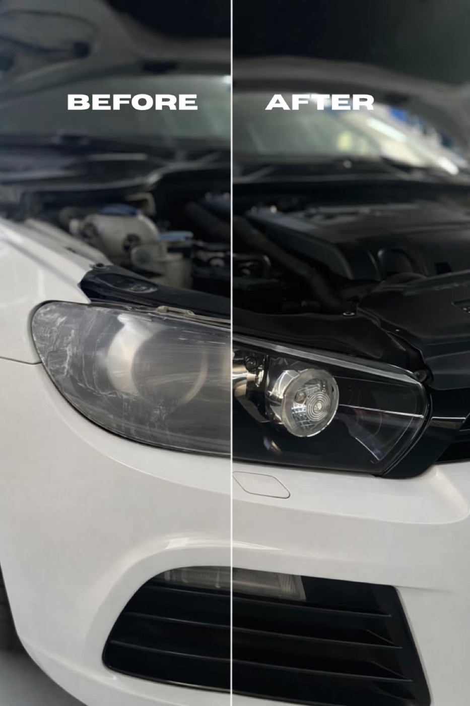
Vidros e faróisFaróis baços voltam a ficar transparentes e os vidros ganham clareza.
Galeria
Resultados reais, do estado em que o carro chegou ao resultado final.
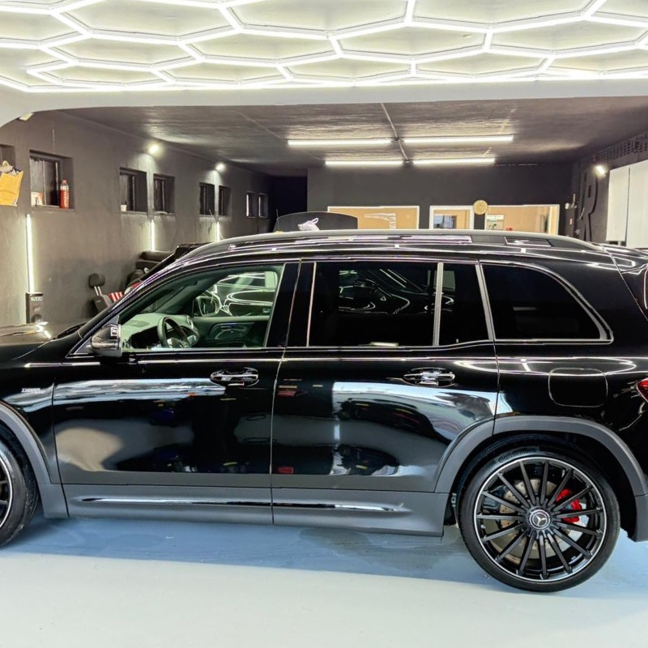
Depois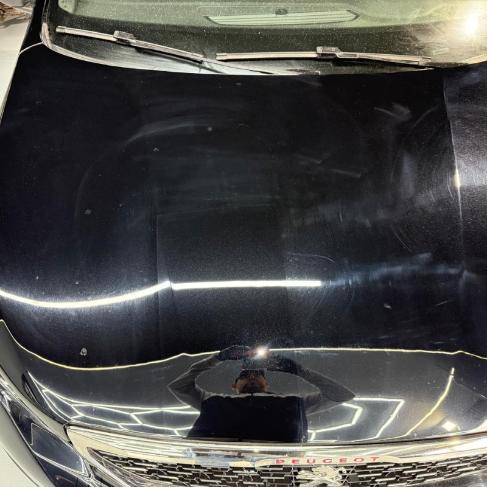
Antes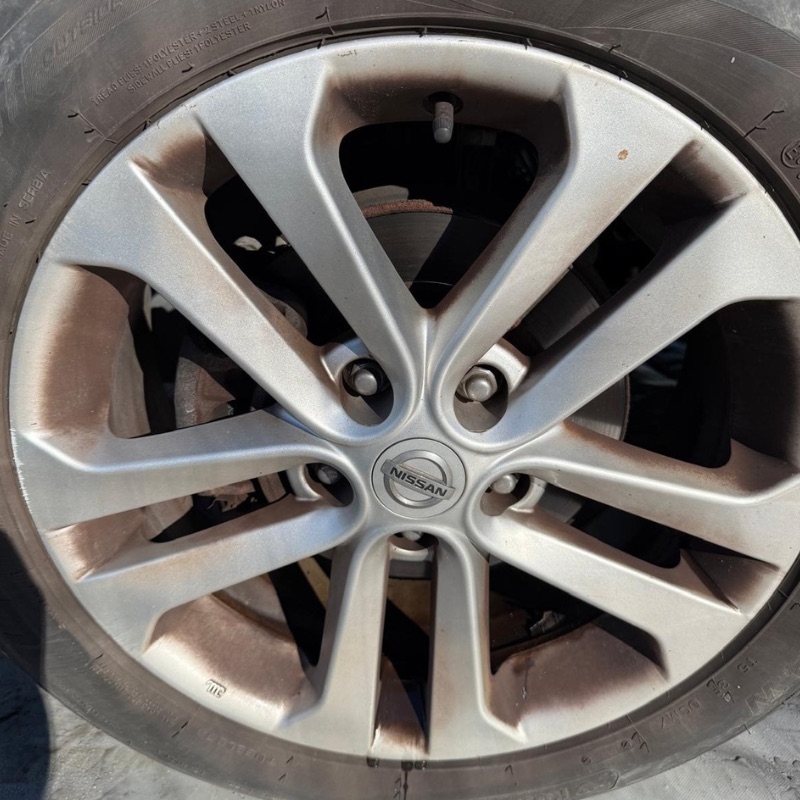
Antes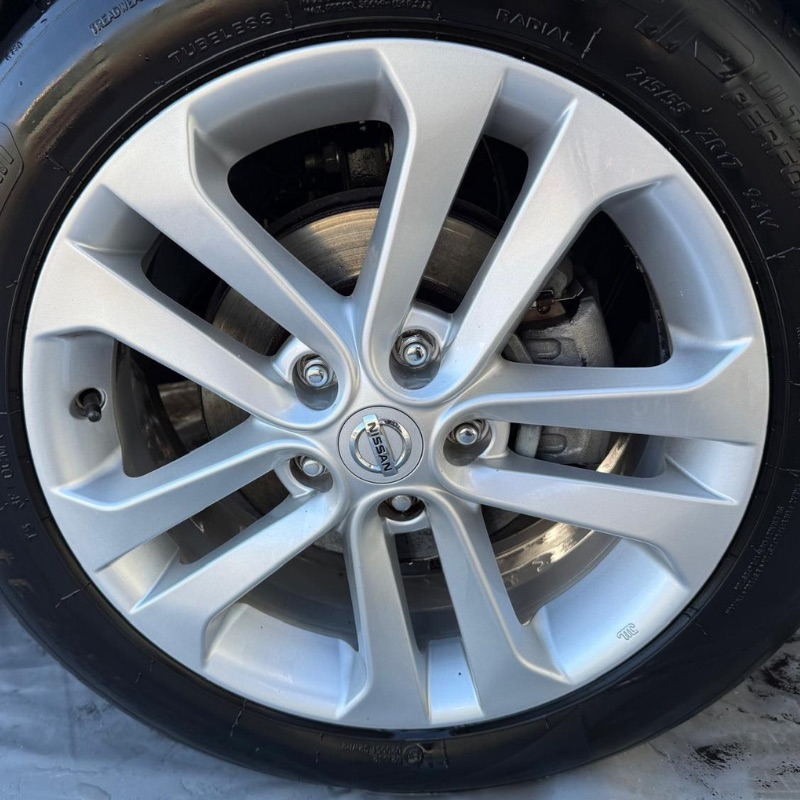
Depois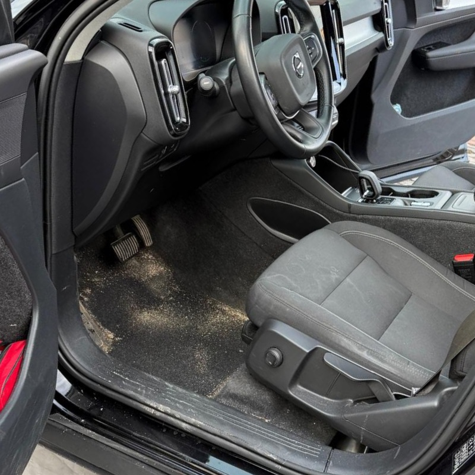
Antes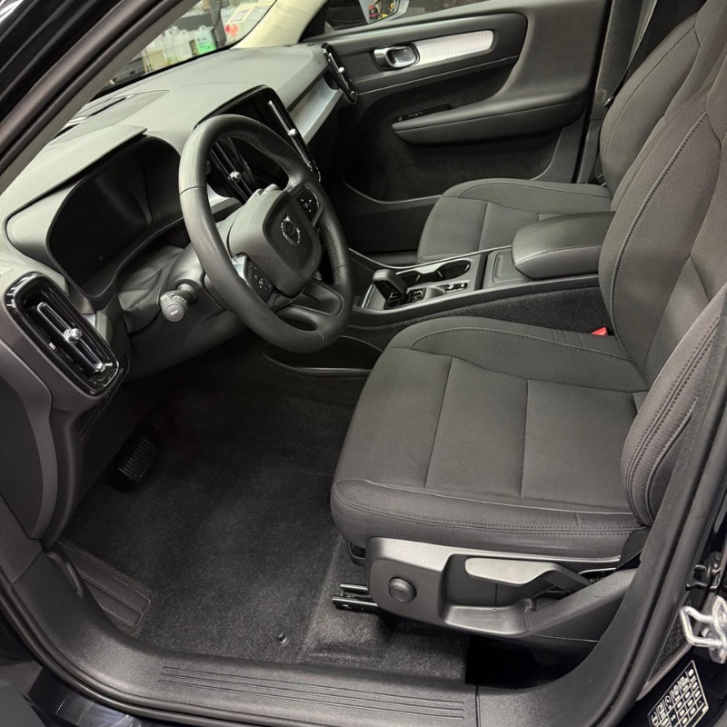
Depois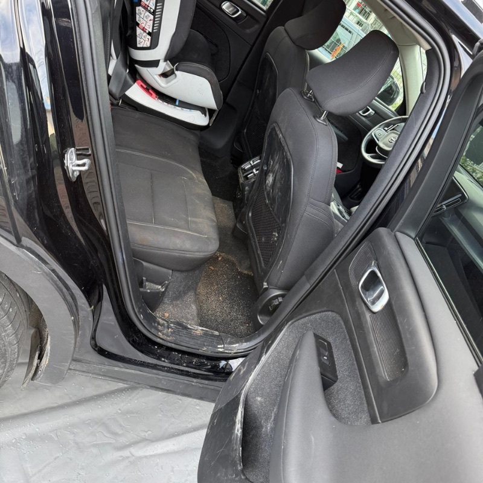
Antes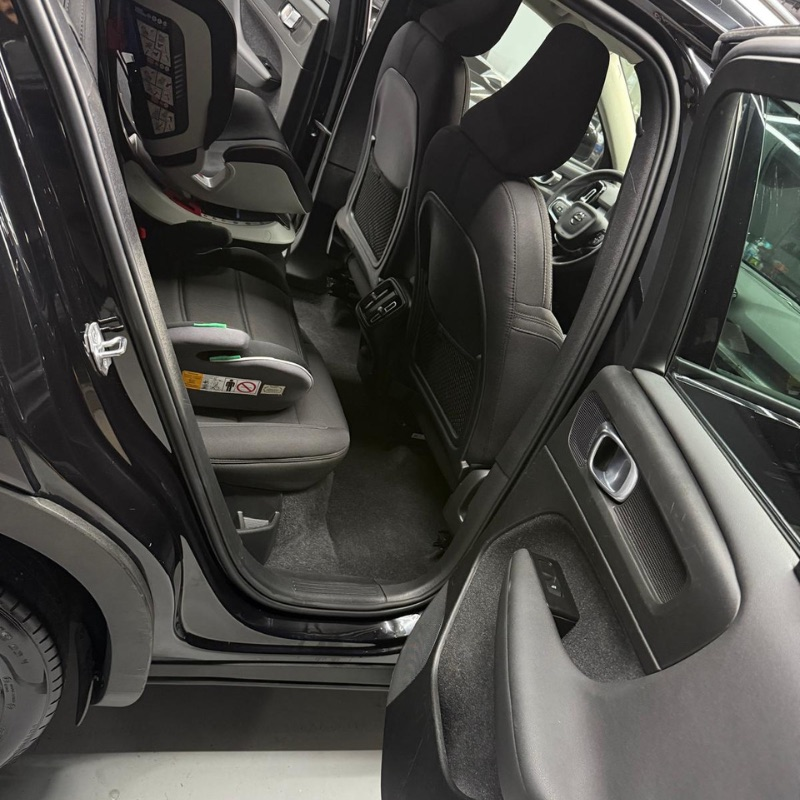
Depois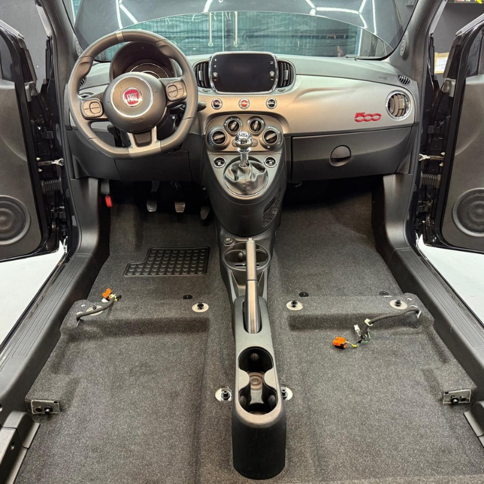
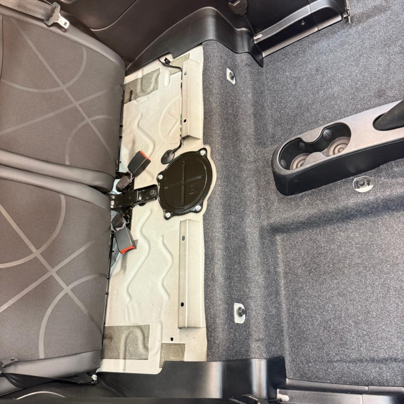
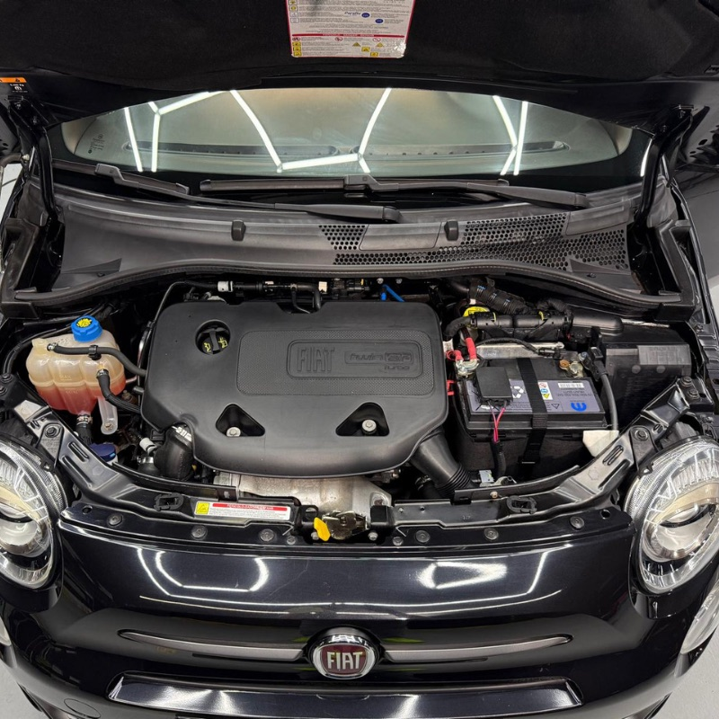
Como funciona
Envie uma mensagem no WhatsApp com o modelo do carro e o que precisa.
Vemos o estado do interior e da pintura e indicamos o tratamento adequado.
Trabalhamos o carro com calma, do interior ao exterior.
Verificamos o resultado consigo antes de lhe entregar as chaves.
Avaliações
★★★★★“Excelente serviço e grande simpatia. Recomendo a quem queira tratar bem do seu veículo.”
★★★★★“Atendimento excelente, profissionalismo e cuidado com os detalhes. Deixei o meu carro (que estava bastante sujo) e voltou limpo e a brilhar.”
★★★★★“Excellent service. Car immaculate. Worth the investment! Thank you”
Sobre nós
Na Mr Bubbles tratamos o seu carro como se fosse nosso. Limpamos, polimos e devolvemos-lhe o aspeto que tinha quando o comprou.
Um carro bem cuidado também vale mais. Dê-lhe esse valor.
Perguntas frequentes
O preço depende do tamanho do carro e do seu estado. Envie-nos fotos pelo WhatsApp e indicamos o valor.
Uma lavagem demora menos que um polimento completo. Combinamos o prazo consigo na avaliação.
Pode. Deixe o carro e avisamos quando estiver pronto.
Por WhatsApp, telefone ou email. Respondemos com disponibilidade e orçamento.
Contacto
Escreva-nos e respondemos com disponibilidade e orçamento.